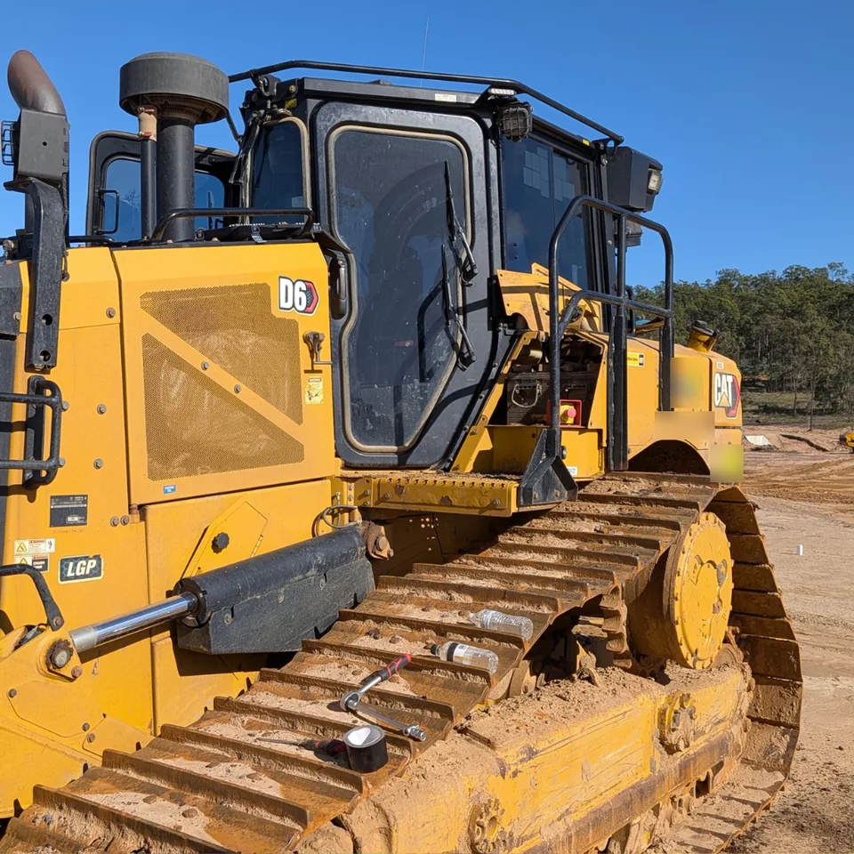

When an earthmoving owner asks what a remap will actually do for their machine, the honest answer is a range. The best way to show that range is with real jobs. Here are two recent ones from Queensland: a CAT D6 dozer and a Komatsu WA600-8 wheel loader. Same service, very different machines, and fuel savings either side of the middle.
*Indicative figures from two real jobs. Results vary by make, model and condition.
The CAT D6: 254 to 314 HP
This D6 runs the 9.3 litre C9.3B engine. After the remap it went from 254 to 314 horsepower, about 24% more, with a 6% fuel saving. The owner also chose to have the DPF, EGR and AdBlue systems removed, which we cover further down.
On a dozer, extra power shows up where you feel it: pushing a full blade, ripping, and climbing out of a cut. The factory calibration leaves a lot of headroom on the table. A remap uses it, so the engine makes its power at lower revs and burns less diesel doing the same work.

The Komatsu WA600-8: 538 to 619 HP
The WA600-8 is a big machine with a 23.2 litre engine. It went from 538 to 619 horsepower, about 15% more, with a 10% fuel saving. AdBlue and DPF were removed on this one too.
Large loaders spend their shifts in short, repeated cycles: load, carry, tip, reverse, repeat. Every cycle asks the engine for a hard push and then drops back, so response matters as much as peak power. A tuned map responds more cleanly to those load changes, and that is where a lot of fuel gets wasted on a stock machine. Here is the owner taking this one for its test drive.
Why 6% on one machine and 10% on the other
Because every machine is different. Engine size, how hard it is worked, its condition and what the emission systems were doing before the job all change the outcome. Be wary of any tuner who quotes one fuel saving number for everything. We say up to 18% because the best machines get there, and these two landed at 6% and 10%. That is the honest range, and it is why we give you a realistic estimate for your own machine instead of a promise.
What those percentages are worth
Here is the working, so you can swap in your own numbers. Litres saved per year equals fuel burn in litres per hour, times 2,000 working hours, times 8%. Then multiply by the diesel price, which we run at $2.80 a litre. We use 8% because it sits right between the two results above.
These are worked examples, not promises. If your machine burns 30 litres an hour, the saving is bigger. If it only works 1,000 hours a year, halve it. Across a fleet the numbers stack up quickly. Not sure what your machine burns? Try our free fuel savings check. Results vary by make, model and condition.
Reliability Solution: DPF, EGR and AdBlue on off-road machines
Both machines above had their emission systems removed, and it is a big reason owners call us. On a dusty site, a DPF that keeps regenerating or blocking pulls the machine out of production, and an AdBlue fault can derate the engine halfway through a shift. Sensor faults, forced regens and the parts bill that follows are a headache you do not need on a machine that earns by the hour. See our guide to DPF problems on heavy machinery for more.
We call it the Reliability Solution. For machines that work off-road, such as earthmoving equipment, it can be a partial or full removal of the DPF, EGR and AdBlue systems, and which way you go is up to you. We do not offer it on road registered vehicles. If your machine is under dealer warranty, on a finance or hire agreement, or working on a site with its own emissions rules, tell us up front and we will talk through what makes sense before you commit.
What tuning day looks like
We come to you, at your yard, your shed or the job site, anywhere in Queensland. All we need is a key and a couple of hours. Power nearby is handy, but the machine does not need to be warm and you do not need a bay or a flat spot. Most machines are back at work the same day.
Before we call a job done, the owner takes the machine for a test drive. It is part of our process and our quality check, so you get to feel the result for yourself.
Every tune is a tailored, customised software solution built by a very experienced software engineer to get the result you are after. It is not an off-the-shelf file. Your original file is archived, and every tune comes with aftercare and a software warranty, so if an engine light comes on after the tune, it is one call and we sort it. Expect a tune done with a smile, and the kettle is usually on.
30-day money-back trial: if the results do not show up, we remove the tune and restore your original settings at no cost.
Which earthmoving machines can be tuned
We cover the lot: excavators, dozers, wheel loaders, graders, articulated haulers and more, across Cat, Komatsu, Hitachi, Volvo and the other major brands. If your machine runs a diesel with an ECU, send us the make, model and roughly how many hours it works each year. Our guides go deeper on Komatsu and Cat excavator tuning and earthmoving fleet fuel savings, and our mining and construction page covers site work.
LP Tuning is Queensland owned and operated, with 20+ years of ECU engineering and more than 350,000 tunes worldwide behind our software. We are mobile across the state, from Brisbane and the Darling Downs to Central and North Queensland.
Get Your Machine Quoted
Tell us the make, model and roughly how many hours a year it works. We will give you a realistic estimate of the fuel saving and lock in a time to come out to you. Free consultation, or call 0491 097 706.
Request a Quote